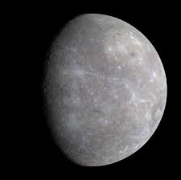

عطارد هو أقرب كوكب إلى الشمس في نظامنا الشمسي، وهو أصغر الكواكب حجمًا. يتميز بسرعته الكبيرة في الدوران حول الشمس.
حقائق عن عطارد
- المسافة من الشمس: حوالي 57.9 مليون كيلومتر
- القطر: حوالي 4,880 كيلومتر
- المدة الزمنية لدورانه حول الشمس: حوالي 88 يومًا أرضيًا
- درجة الحرارة: تتراوح بين -173 و427 درجة مئوية